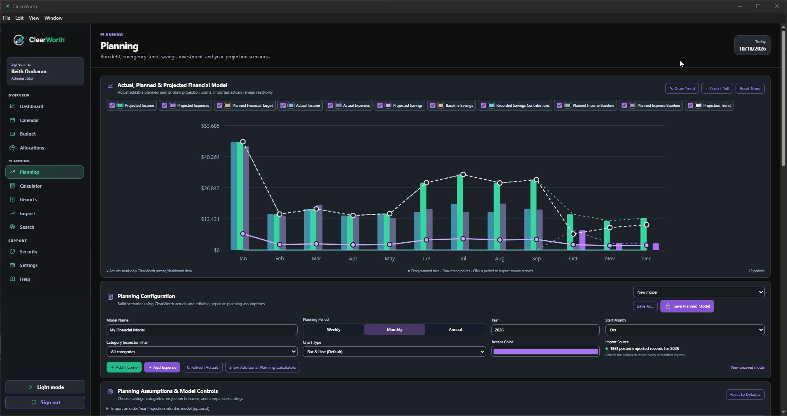

ClearWorth

Explore ClearWorth through fourteen walkthroughs from earlier versions covering planning, dashboards, reports, search, security, and everyday workflows.
Featured project
ClearWorth
A clearer view of your financial life: income, expenses, savings, debt, and longer-term planning in one local-first Windows workspace.
WindowsPersonal financeLocal-firstVersion 1.0.1
Features & purpose
- Configurable financial dashboards, budgets, and income allocation.
- Planning Studio with separate actual, planned, and projected values; savings and debt goals.
- Multi-view calendar workspaces, task planning, imports, reports, and transaction tracking under Import.
Technology
Electron, React, TypeScript, and SQLite, with Vite, ExcelJS, and Windows installer tooling.
Privacy & security
Argon2id password hashing, configurable session and lockout controls, role checks, Windows-protected secrets, and Electron isolation. Saved-secret protection does not establish whole-database or backup encryption.
Availability: Version 1.0.1 for Windows; unsigned installer available.